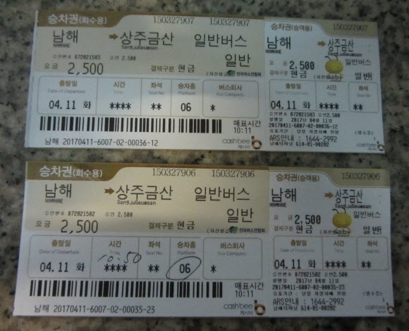
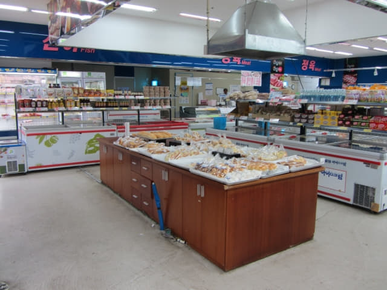
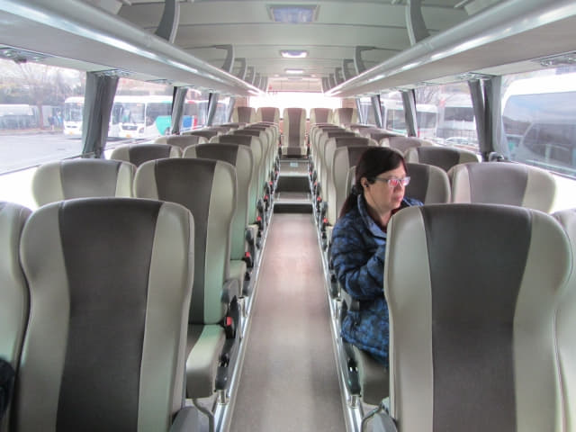
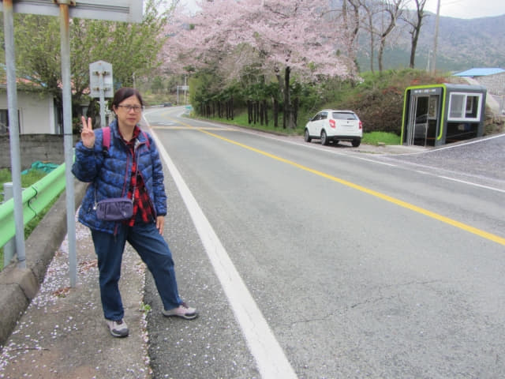

4.11.2017 (星期二)
按原定計劃, 今天早上攀登南海最具代表性的山脈, 也是閑麗國立公園內唯一的山林公園 — 南海錦山 (남해 금산 Namhae Geumsan), 然後步行往尚州銀沙海灘 (상주은모래비치)及松亭松風海水浴場(송정솔바람해수욕장), 最後乘車往南海德國村(남해독일마을)或美國村(아메리칸빌리지), 行程好像有點緊湊的。
早上六時十五起床, 拉開窗簾一看, 外面正下著大雨, 因為今天攀登南海錦山, 山路濕滑, 十分危險, 必須等待天氣好轉才可以出發。按計劃, 我們是搭乘早上 7:25 的第一班巴士往南海錦山登山口, 看來要改乘往後的班次, 南海的巴士班次十分疏落, 一天只有幾班巴士, 往後也不知什麼時候才有巴士, 都是到巴士站買了車票才知道。沒辦法, 天公不造美, 今天的行程肯定受阻。
在房間吃了昨晚在超級市場買的蛋糕, 蛋糕很大, 只吃了一半, 其餘的留下來給明天的早餐, 然後無奈地呆望著窗外的天空和遠處的山巒, 寄望大雨快些停下來。
一直在等…… 等 …….. 等……… 等……….. 等……….。
等了三個多鐘頭 大雨終在早上九時四十五分停了
等了三個多鐘頭, 大雨終於約在早上九時四十五分停了下來, 天色也稍為明朗一些, 便馬上出發往第一個目的地 — 南海錦山。
走出酒店, 沿小街匆匆一直走。
這小街已經走過很多次, 現在才看見街口這間 L.S Mart 超級市場, 主要原因是門口經常停泊了很多大型車輛, 阻擋了招牌。
在 L.S Mart 超級市場的街口轉右, 經過油菜花田, 再向前走便抵達南海公用客運站, 進入一樓大堂, 買了兩張往錦山菩提庵登山口站 (신보탄)的車票。
南海錦山有兩個登山口, 都可以登上錦山菩提庵和山頂:
- 두모마을 (錦山第一登山口)
- 신보탄 (錦山第二登山口, 也稱為錦山菩提庵登山口)
我們原本的計劃是從錦山第一登山口攀登上錦山菩提庵, 從錦山第二登山路線下山, 然後步行往尚州銀沙海灘, 這樣的路線比較順, 不用走回頭路, 可惜因天雨出發遲了三個多鐘頭, 唯有改為登山和下山都是路線較短的錦山第二登山口。
[註]: 有公共交通直達山上的錦山菩提庵, 不想攀山的旅客可乘車前往。
很心急想知道下一班的巴士時間……. 登登登凳 ….. 是早上 10:50。原本是搭乘早上 7:25 的第一班巴士, 現在改為早上 10:50, 足足延遲了三個半鐘頭, 下午往德國村的行程幾乎可以肯定取消!

看看手錶, 約早上十時十分, 離開車還有四十分鐘, 便走到客運站大樓二樓的 티큐브남해점 (TCUBE) 超級市場, 目的當然只有一個 — 往麵包區買超好味的圓碌碌麵包, 簡直好吃到不得了!。這麵包很好賣的, 一出爐很快便會賣清光, 不是每次都可以買到的, 不知這次有沒有…..。
匆匆走往麵包區。
哈哈~~~~ 有啦! 就是圖中圓碌碌細那隻。

買了四個圓碌碌麵包, 返回一樓候車處慢慢吃。太好吃了! 這時才後悔為什麼只買四個那麼少? 想再往超級市場, 但恐怕時間不夠, 不想冒險, 算了吧!
還有少許時間, 便在南海公用客運站一樓大堂四處閒逛。
於早上十時四十分走到6號月台, 一輛巴士已經停靠在那裡。上車啦! 唔洗問阿貴, 每個月台一天只有幾班巴士, 肯定是這部巴士啦!
哈哈~~ 想做 Part Time 車長!
每個班次最多都只得小貓三幾隻, 不知巴士如何經營下去? 香港的巴士公司真幸福, 每年利潤數以億計, 還可以年年加價!

巴士於早上十時五十分開出, 沿途交通非常暢通。
南海草原 (남해다초지)
巴士行駛了約十分鐘, 經過一個水池旁的鬱金香園 (남해다초지), 紅紅黃黃的, 還有油菜花, 十分漂亮。
離開南海草原, 巴士繼續向前行駛, 經過我們昨天在這裡轉車的二東面(이동면), 立即望望我們等車的路口, 不禁笑了一笑。
신보탄巴士站 離錦山菩提庵登山口最近的巴士站
巴士於早上十一時二十二分抵達「신보탄」巴士站, 也是離錦山菩提庵登山口最近的巴士站。


{kind=link}